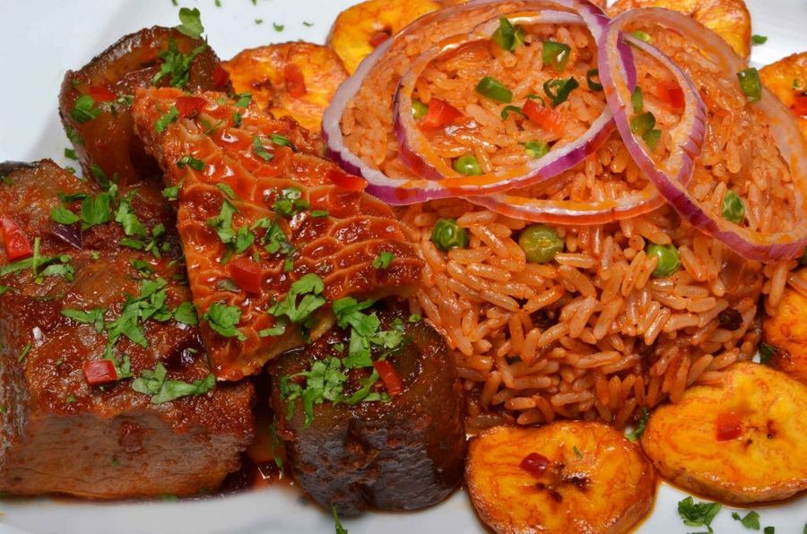

Jollof rice is one of the most common dishes in West Africa. There are several regional variations in name and ingredients. In Mali it is called zaamè in Bamanankan. The dish's most common name of Jollof derives from the name of the
Wolof people, though in Senegal and Gambia the dish is referred to in Wolof as ceebu jën or benachin. In French-speaking areas, it is called riz au gras. Despite the variations, the dish is "mutually intelligible" across the regionas had
become the best known African dish outside the continent.
Based on its name, the origins of jollof rice can be traced to the Senegambian region that was ruled by the Jolof Empire. Food and agriculture historian James C. McCann considers this claim plausible given the popularity of rice in the
upper Niger valley, but considers it unlikely that the dish could have spread from Senegal to its current range since such a diffusion is not seen in "linguistic, historical or political patterns". Instead he proposes that the dish spread
with the Mali empire, especially the Djula tradespeople who dispersed widely to the regional commercial and urban centers, taking with them economic arts of "blacksmithing, small-scale marketing, and rice agronomy" as well as the religion
of Islam. Marc Dufumier, Emeritus Professor of Agronomy proposes a more recent origin for the dish, which may only have appeared as a consequence of the colonial promotion of intensive peanut cropping in central Senegal for the French oil
industry, and where commensurate reduction in the planted area of traditional millet and sorghum staples was compensated by forced imports of broken rice from Southeast Asia. It may then have spread throughout the region through the
historical commercial, cultural and religious channels linking Senegal with Ghana, Nigeria and beyond, many of which continue to thrive today, such as the Tijāniyyah Sufi brotherhood bringing thousands of West African pilgrims to Senegal
annually.
Although considerable variation exists, the basic profile for Nigerian jollof rice includes long grain parboiled rice, tomatoes and tomato paste, pepper, vegetable oil, onions, and stock cubes. Most of the ingredients are
cooked in one pot, of which a fried tomato and pepper puree characteristically forms the base. Rice is then added and left to cook in the liquid. The dish is then served with the protein of choice and very often with fried plantains, moi
moi, steamed vegetables, coleslaw, salad, etc.
In the riverine areas of Nigeria where seafood is the main source of protein, seafood often takes the place of chicken or meat as the protein of choice and there are variations of the classic jollof rice; including coconut jollof rice,
fisherman jollof rice (made with prawns, periwinkles, crayfish), mixed vegetables jollof rice, and rice and beans. More economical versions of jollof rice are popularly referred to among Nigerians as “concoction rice,” the preparation of
which can involve as little as rice and pepper
Watch how it's prepared